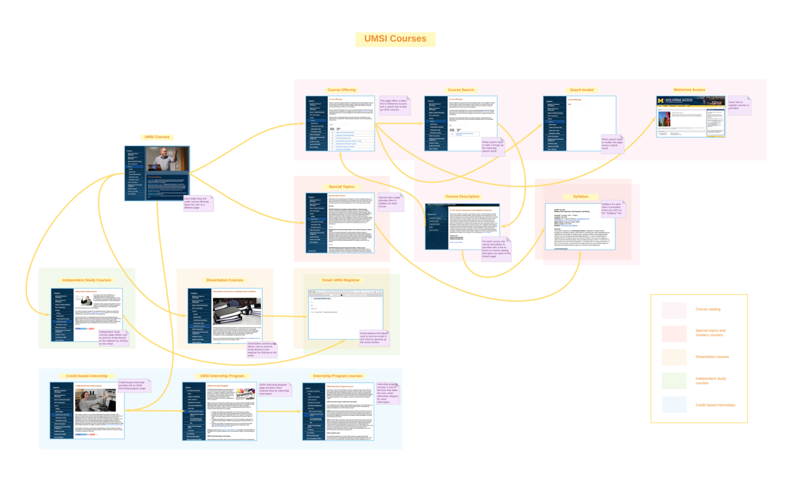
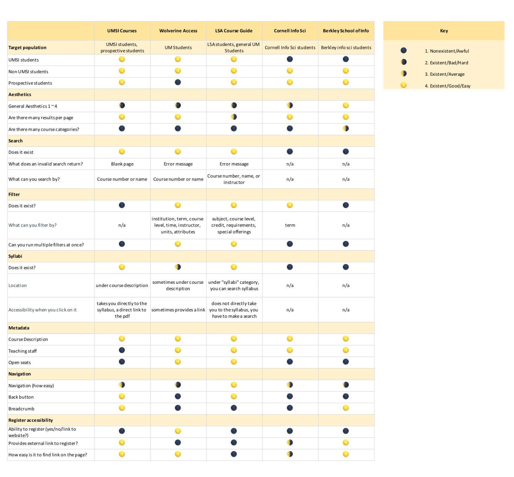

UMSI Courses
Usability Testing Case Study
The practice of creating and conducting usability tests is an essential component of any UX designer’s job — it provides direct, real-time demonstration of the nature of a user’s interaction with your product. In that, it consequently provides the most direct gauge as to how long it takes to complete tasks on the given interface, how satisfied your participants are with their product experience, the changes that are required, whether or not your product goals are met at the current phase of design, among others. The current structure of our usability test is as follows:
- Pre-questionnaire: for our purposes of gaining insight on possible contributing factors to the participant’s experience with your platform.
- Introduction and Scenario: We wrote these such that the participants knew what was expected of them for the test as well as understanding the type of situation in which they might find themselves using the course guide.
- Script: For our usability test, we designated a set of tasks that we believed captured the scope of the features available in the platform. We also kept in mind during our design the sentiments expressed by participants and their delineated experiences regarding course guides in our surveys, interviews, etc.
- Post-questionnaire: We wanted to gauge the participants’ post-test opinions for more specific insight; such as what they felt was the easiest task, or how they felt about the platform following their use.
The specific research questions we needed to answer were as follows:
- Does UMSI Course meet the standards of students using the course browsing website?
- What are the features that students need and prefer to find their courses?
- What kind of information should be provided under course description?
Problem Statement
We have three main problems that we would like to address through our usability testing. The first problem addresses functionality. Does the lack of additional search and filter features, such as searching by credit hours, UMSI path requirements, meeting day/times, and course levels cause user frustration when looking for a specific class? The next problem is that the website lacks supporting information or metadata about faculty information, open and closed seats and enrollment status, location, meeting time, class number, Course Profile link (ART), and syllabus. We wanted to see if the UMSI course guide provides this information or any external tools to show these information as needed for registration. The third issue is regarding usability and accessibility. The search function logistics has several problems on its own, lacking a search button and showing a blank page with no back button for an empty or an invalid search. It also has navigation problems and poor organization that confuses and frustrates the users. We wanted to see if these problems were actually causing delay and frustration in user experience of the website.
Users
Our users are students in the School of Information, including both undergraduate and graduate levels. Our tasks were designed knowing that the users have previous experience on the site. Their situation of use is when they are looking up SI courses to find information for their class registrations. They could also be using the site to browse through courses and explore their options within the School of Information. Unless they are looking for a particular class, the course catalog would be used to quickly look up information because it is a centralized page containing all the UMSI courses. Users would be motivated to find the sufficient information as well as compare different courses as needed.
Developing Process
The first step we took in creating our script, tasks, logging form, and questionnaires was to identify the problems that we wanted to target. After we established our problems, we were able to come up with tasks that would either expose or optimize them. The tasks that we came up with varied in scope - some of them were created for the sole purpose of identifying bugs and UX improvements in the system, some were created to identify the most efficient way to reach certain pages, and others were created to directly identify clarity and usability within specific parts of the website.
With problems and tasks in place, we started brainstorming ideas for our script. We came up with various personas and scenarios to use as the premise for our test, and decided to settle on using a more realistic storyline - to put our participants in the shoes of a student registering for UMSI courses. This was a persona that many of our participants fell under in real life, and we didn’t want to include unnecessary embellishments that would take away from the accuracy of the test. We then created our pre-questionnaire to identify how much experience our participants had with using the website, so that we could later analyze the learning curve required for the UMSI site.
Our final step was to develop the post-questionnaire. This revolved entirely around the participant’s experience with both the product and the process involved. We wanted to gauge the emotions of the participant, as well as their recommendations for improvements and things that they felt went well. While our test participants were working through the tasks, we had one person facilitating the test and everyone else taking notes on their behaviour and whether they were successful in the tasks. Our logging form is a compilation of these notes, sorted chronologically by the questions that we asked.
Findings
With this usability test, we wanted to approach a number of questions that rose as a result of applying results from the previous research to the specific environment the UMSI course guide is in. The first research question we approached was the versatility of the search function. We decided to test this with three different queries: SI432, SI422, and 422. The first is a nonexistent course number, and the third removes the department code, which is the only system-acceptable query. This led to visible frustration in all participants, and often strong confusion when SI422 returned a blank page.
Another research question that we approached was if users were able to find the questions that aligns with their specific needs. Based on the personas, we asked users to find certain information regarding courses, ranging from schedules to faculty: information that interview participants expressed interest in. The results were quite interesting; users were frequently unable to find the information tasked, and whenever this happened, they either gave up (Angel) or actively reached out to other sources (Vinh) such as using Google or Umich Academic Reporting Tools.
Additionally, from these sets of tasks, we decided to touch upon the navigability of the course guide. While the site seems to be informative about navigation with its breadcrumbs, we wanted find out if users can navigate out of unexpected situations with ease. The tasks above addressed this question in two ways; the first two queries lead to empty results and some instances of opening the syllabi happened in the same tab (contrary to how some opened in a new tab). The results were not too surprising; users relied strongly on the in-browser back button. When asked to navigate back to the course catalog without relying on this feature, some participants, such as Angel, became lost and confused on where the course section of the UMSI website is. Some participants (Ryan) went as far to acknowledge this later in the post questionnaire, specifically pointing out that the inconsistent new tab behavior can be confusing.
Our last research question was based on the information organization and architecture of the courses, where duplicate course information is listed outside the course catalog in their own pages with incorrect or outdated information in either of the two. This pattern of multiple listings have different information and this directly caused all participants to be confused. A common behavioral pattern was that the users would search the course in the catalog first.
One thing we learned about that was not in our scope was the search function that exists for the entire UMSI site on every page at the top right. When users were unable to find the information prompted, they often used this function.While this is out of our scope, a serious redesign that would allow users to easily identify the primary function of this overarching search function seems necessary for the course catalog search bar to be easily understood.
Results & Recommendations
Our participants were mostly previous users of the UMSI course websites. Because we were asked to perform in class testing, 3 out of 4 our participants were in the School of Information. One person was a Computer Science major, so he was not part of the School of Information and was the only one who did not have any previous experience using the UMSI courses website. The majority of them have used the website minimally, not having any expertise on the website. Our participants were able to provide us with key insights with their fresh eyes on the website. One of our participant was a Master’s student, so he was able to give us insights in graduate student’s perspective.
Through our usability testing, we were able to confirm the major flaws of the UMSI courses website. To lessen the frustration, the search function should be further developed, including a search button and back button even when there is an invalid search. Another aspect the course section could improve as a whole is to provide all the smaller sections such as “Special Topics” and “Independent Studies” under the course catalogue. A drop down menu or a comparative tap to select these options all in one page would help the overall navigation and lessen user frustration.
There also should be an existing filter for undergraduate and graduate courses and for different required curriculum paths of the BSI and MSI programs. These improvements will not only help with the clarity of where to find everything, but also save time in clicking back and forth. Another big issue we had was the user getting lost in empty pages after viewing the syllabus or searching something invalid. There should be some sort of indication that the page is loading or lost to inform the users what to do. Although the in-browser back button exists, there should be a back button within the website.
The participants reported that the emotions that they acquire through UMSI course website was annoyance and frustration. This should not be the case when you are simply trying to gain information about the classes you are taking in the next semester. For most, this will be a repeating process for multiple semesters. The problem will be passed down to incoming SI students who will be using the website, causing the same frustrations. Clearer navigation, more sufficient metadata, well-developed search and filter function, and back button to return to the main page can ameliorate the usability.